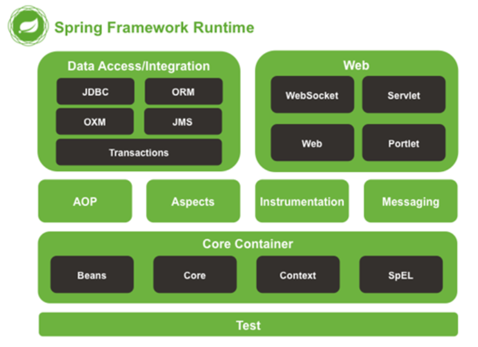

前言
只要接触过或者学过java的,spring的学习必不可少。那么spring 是什么？为什么这么流行？在进行短暂的接触之后简单的做下笔记，希望也能给其他想要学习java的爱好者分享一点点自己的学习经验。内容可能不太够深入,因为spring的概念太多了,而且相关的知识比较分散,类似一个复杂的工艺品,需要循序渐进更需要对每道工序能深入了解，并非一朝一夕就能完成的。当然随着时间的推移,spring也不是一成不变的,新的技术新的版本都会要求我们时刻保持高度的警惕心持续学习。
# Spring
# 什么是Spring?
下面是词条百科对spring的描述：
Spring框架是一个开放源代码的应用程序框架，针对bean的生命周期进行管理的轻量级容器。更多的是一种工具
下面是spring官网对其描述
“We use a lot of the tools that come with the Spring framework and reap the benefits of having a lot of the out of the box solutions, and not having to worry about writing a ton of additional code—so that really saves us some time and energy.”
Sean Graham, Application Transformation Lead, DICK’s Sporting Goods
大概意思是说spring使开发变得简单,包括了大量的开箱即用的工具，而不必要写大量重复冗余的代码了，提高了开发的效率同时降低了开发的门槛。当然目前spring项目不仅仅在开发web方面，衍生了一些子项目，每个子项目又有不同的应用场景。比如比较热门的一键式配置的springboot 可以快速上手开发而无需进行大量的关系依赖的jar包引用、spring mvc mvc架构开发项目、spring cloud 针对近几年比较火的云开发、spring AMQP 做消息服务开发、spring security 做安全的等等。还有很多其他类型的子项目，感兴趣的可以访问这里 进行查看。我们这里说的spring 更确切的是指spring framework。
# spring模块图

我们从下往上看
- Spring Test：spring中集成测试的模块
- Srping Core : 包括 Beans（理解为生产对象的模具）、Core (Spring的核心为spring提供了基本功能）、Context(Spring 的容器 也是bean的生产工厂)、SpEL(表达式语言 是一个支持运行时查询和操作对象图的表达式语言 。 语法类似于 EL 表达式 ，后续界面绑定数据会用到。)
- Spring Aop&Aspect : 面向切面编程，Spring 做切面用主要用来增强实现的类。简单就是在一些地方想额外加代码提供更丰富的功能。比如我们系统中随时可以使用日志记录。
- Spring Instrumentation: 提供类的检测
- Spring Messaging：Spring内部模块之间协作使用的消息基础
- 数据访问/集成: JDBC、ORM、OXM(处理xml)、JMS(消息使用和制造)
- Spring Web: WebSocket(Socket通信)、Servlet(交互式地浏览和生成数据，生成动态web内容,是javaweb服务器的接口)、web、portlet(Portlet环境和映射spring-webmvc模块功能的MVC实现。)
# IoC
Ioc(Inversion of Control)即控制反转，它是一种思想不是一种技术。
# Spring的核心特性
spring 核心特性就是IOC和AOP，IOC（Inversion of Control），即“控制反转”；AOP（Aspect-OrientedProgramming），即“面向切面编程”。
# 控制反转
从字面意思可以拆为两部分：1、控制 2、反转 。 那么是谁控制，控制什么东西，怎么控制？反转又指的是什么，为什么称为反转，反转又有什么好处？带着问题下面介绍下。
首先对象这个概念在面向对象编程特别重要。我们知道编写一个程序需要有大量的类文件构成，此处以java为例，这些java文件大部分是类文件，类实例化之后有了对象，由此我们就可以操纵类的属性和方法。有这么一个问题，在类A中去调用类B的属性或方法，我们通常的做法肯定是 在类A里面实例化一个B的对象即 B clazz=new B();然后通过B.xxx来拿到属性或者调用方法。这一系列是我们手动创建的。Spring容器的作用就是帮我们管理这些类，只要我们定义了一些要使用的类，通过某种方式告诉容器，等我们什么时候用到这个类，那么容器自动生成一个实体类对象。不需要去手动new也就是说，我们只管定义类是怎么样的，至于实例化的过程交给容器做就好了，spring容器帮我们管理对象的生成、以及对象依赖的管理。
有了以上概念那么对于上面的问题有了回答
- 谁控制、控制什么东西、怎么控制？
由spring容器控制对象的创建和对象之间的依赖，控制的方式就是每个类都会生成一个bean（实际内部叫BeanDefinition,此处不过多介绍，就只要知道它用来记录类的一些详细信息以便之后创建对象）
2.反转是什么,为什么称为反转，有什么好处
反转的对立面就是正转，正转是什么，比如刚才说的类A中需要用到类B。如果B是A的一个属性，在我们实例化A的过程中必须先把B实例化然后才能用到B.xxx,这个过程是我们主动创建执行的，称为正转。反转就是不需要主动创建，由容器帮我们在创建对象A的同时自动处理A的依赖B。这两个方式是针对对象的创建主动权发生了变化。
Ioc的主要实现方式是DI(Dependency Injection)即依赖注入,即在使用对象的时候自动依赖对象。
那么这里有一个概念就是“工厂” BeanFactory，这个工厂就是对外生产对象的，所以Ioc用到了工厂设计模式
# AOP
AOP（Aspect-oriented Programming）即面向切面编程。
看到AOP不能不提一下熟悉的面向对象编程（OOP）
OOP三大特点
继承
封装
多态
既然有了OOP，AOP存在的意义是什么？黑格尔黑哥说过“存在即合理”，哈哈哈
先看OOP一些特点，我们抽象某一类事物的特征用接口来实现，然后子类实现接口中的一些方法即可。或者通过继承的关系来实现拥有父类的特性。当需要为分散对象引入公共行为（比如每个子类中需要添加日志输出），那么OOP显得很无力。OOP只定义的是从上到下的层级关系。并没有从左到右的关系。AOP就是用来解决这个问题的。AOP就像一把刀子，哪里有需要哪里开刀，把特性给加进去。
Aspect（切面）： Aspect 声明类似于 Java 中的类声明，在 Aspect 中会包含着一些 Pointcut 以及相应的 Advice。Joint point（连接点）：表示在程序中明确定义的点，典型的包括方法调用，对类成员的访问以及异常处理程序块的执行等等，它自身还可以嵌套其它 joint point。Pointcut（切点）：表示一组 joint point，这些 joint point 或是通过逻辑关系组合起来，或是通过通配、正则表达式等方式集中起来，它定义了相应的 Advice 将要发生的地方。Advice（增强）：Advice 定义了在Pointcut里面定义的程序点具体要做的操作，它通过 before、after 和 around 来区别是在每个 joint point 之前、之后还是代替执行的代码。Target（目标对象）：织入Advice的目标对象.。Weaving（织入）：将Aspect和其他对象连接起来, 并创建Adviced object 的过程
让我们来假设一下, 从前有一个小县城, 在一个月黑风高的晚上, 这个县城中发生了命案. 作案的凶手十分狡猾, 现场没有留下什么有价值的线索. 不过万幸的是, 刚从隔壁回来的老王恰好在这时候无意中发现了凶手行凶的过程, 但是由于天色已晚, 加上凶手蒙着面, 老王并没有看清凶手的面目, 只知道凶手是个男性, 身高约七尺五寸. 县令根据老王的描述, 对守门的士兵下命令说: 凡是发现有身高七尺五寸的男性, 都要抓过来审问. 士兵当然不敢违背县令的命令, 只好把进出城的所有符合条件的人都抓了起来.
来让我们看一下上面的一个小故事和 AOP 到底有什么对应关系.
首先我们知道, 在 Spring AOP 中 Joint point 指代的是所有方法的执行点, 而 point cut 是一个描述信息, 它修饰的是 Joint point, 通过 point cut, 我们就可以确定哪些 Joint point 可以被织入 Advice. 对应到我们在上面举的例子, 我们可以做一个简单的类比, Joint point 就相当于 小县城里的百姓,pointcut 就相当于 老王所做的指控, 即凶手是个男性, 身高约七尺五寸, 而 Advice 则是施加在符合老王所描述的嫌疑人的动作: 抓过来审问.
为什么可以这样类比呢?
Joint point： 小县城里的百姓: 因为根据定义,Joint point是所有可能被织入Advice的候选的点, 在 Spring AOP中, 则可以认为所有方法执行点都是Joint point. 而在我们上面的例子中, 命案发生在小县城中, 按理说在此县城中的所有人都有可能是嫌疑人.Pointcut：男性, 身高约七尺五寸: 我们知道, 所有的方法(joint point) 都可以织入Advice, 但是我们并不希望在所有方法上都织入Advice, 而Pointcut的作用就是提供一组规则来匹配joinpoint, 给满足规则的 joinpoint 添加Advice. 同理, 对于县令来说, 他再昏庸, 也知道不能把县城中的所有百姓都抓起来审问, 而是根据凶手是个男性, 身高约七尺五寸, 把符合条件的人抓起来. 在这里 凶手是个男性, 身高约七尺五寸 就是一个修饰谓语, 它限定了凶手的范围, 满足此修饰规则的百姓都是嫌疑人, 都需要抓起来审问.Advice：抓过来审问,Advice是一个动作, 即一段 Java 代码, 这段 Java 代码是作用于 point cut 所限定的那些Joint point上的. 同理, 对比到我们的例子中, 抓过来审问 这个动作就是对作用于那些满足 男性, 身高约七尺五寸 的小县城里的百姓.Aspect:：Aspect是 point cut 与Advice的组合, 因此在这里我们就可以类比: “根据老王的线索, 凡是发现有身高七尺五寸的男性, 都要抓过来审问” 这一整个动作可以被认为是一个Aspect.
AOP实现使用的是代理模式
代理实现的前提是代理类和实际类实现的是同一接口或者继承关系
代理分为静态代理和动态代理。静态代理是固定的代理，动态代理是编译时候动态生成的代理。
静态代理
定义一个接口
public interface IUserDao {
void eat();
}
2
3
4
具体调用类
public class UserDao: IUserDao {
@overrid
public void eat(){
System.out.print("吃饭了");
}
}
2
3
4
5
6
7
代理类的实现
public class UserProxy: IUserDao {
private IUser _user;
public UserProxy(IUser user){
_user=user;
}
@overrid
public void eat(){
before();
_user.eat();
After();
}
public void before(){
System.out.print("吃饭前");
}
public void After(){
System.out.print("吃饭后");
}
}
2
3
4
5
6
7
8
9
10
11
12
13
14
15
16
17
18
19
20
21
22
23
24
测试代码
public void main(args[]，obj value){
IUser user=new UserDao();
UserProxy proxy=new UserProxy(user);
proxy.eat();
}
//输出
//-----吃饭前
//-----吃饭了
//-----吃饭后
2
3
4
5
6
7
8
9
10
11
12
13
这个地方通过静态代理曾强原来的UserDao.eat()方法而不改变具体对象的eat中的东西